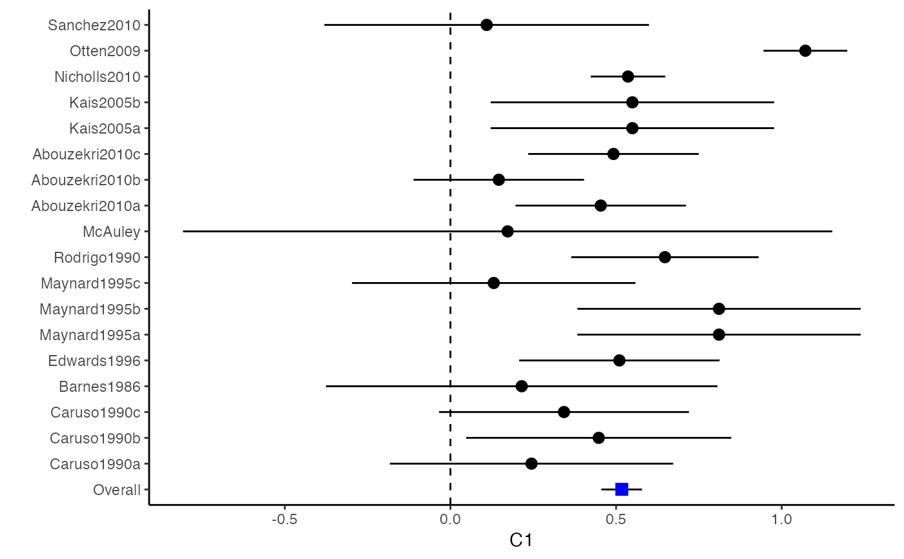
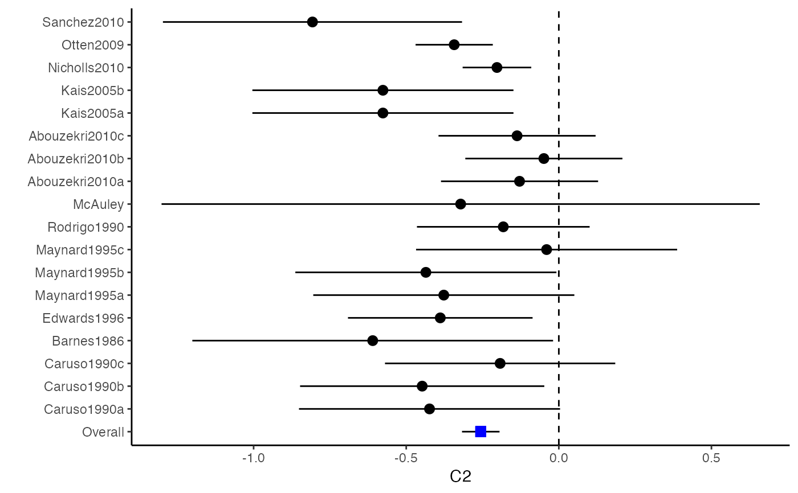
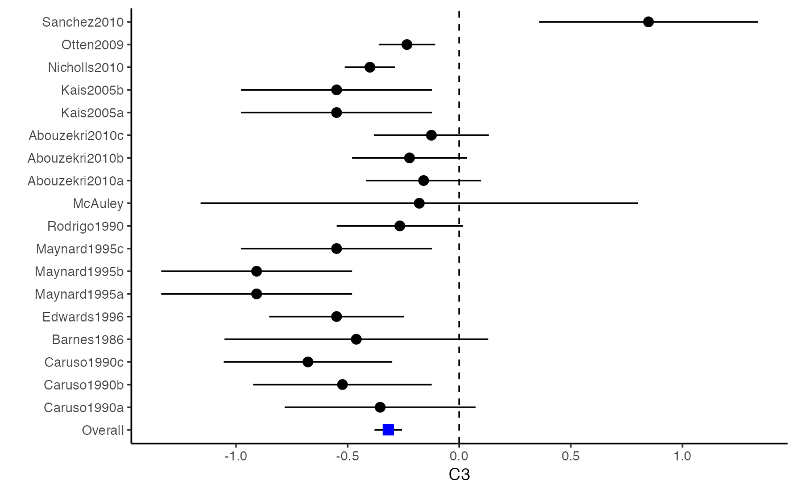
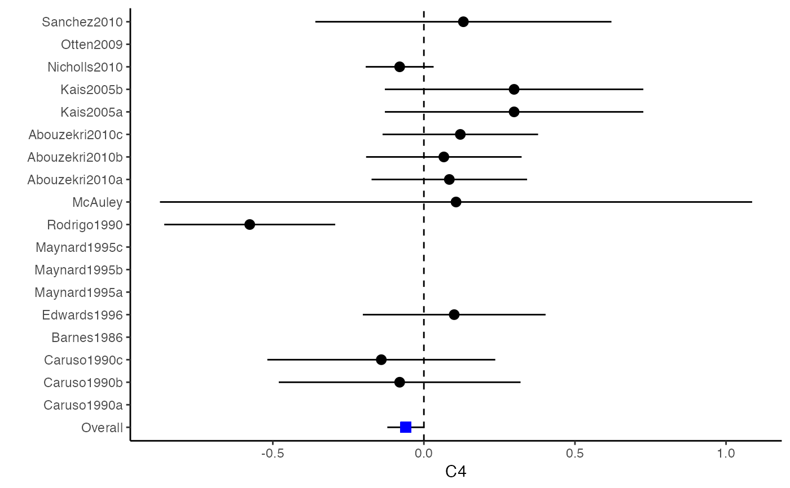
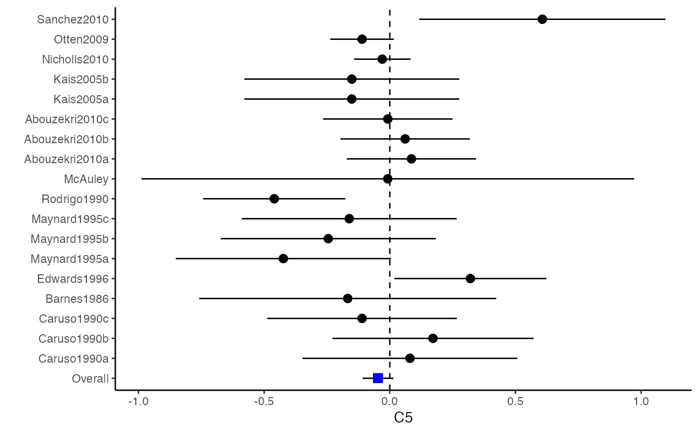
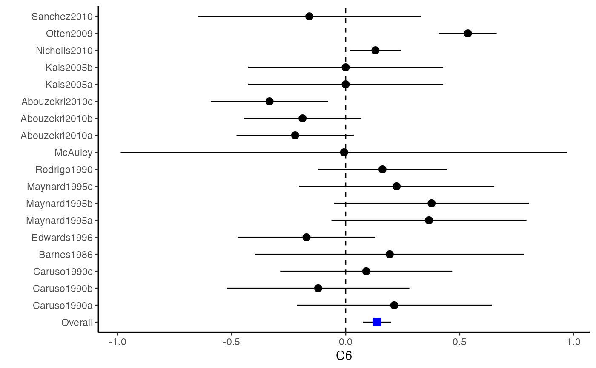

metami.RdMultiple imputation allows for the uncertainty about the missing data by generating several different plausible imputed data sets and appropriately combining results obtained from each of them. Let \(\hat{\theta}_{*m}\) be the estimated coefficient from the \(m\)th imputed dataset for one of the \(p\) dimensions in the multivariate outcome, where \(m=1,\dots,M\). The coefficient from MI \(\bar{\theta}\) is simply just an arithmetic mean of the individual coefficients estimated from each of the \(M\) meta-analysis. We have $$\bar{\theta}=\frac{\sum_{m=1}^{M}\hat{\theta}_{*m}}{M}.$$ Estimation of the standard error for each variable is little more complicated. Let \(V_W\) be the within imputation variance, which is the average of the variance of the estimated coefficient from each imputed dateset: $$V_W=\frac{\sum_{m=1}^{M}V ({\hat{\theta}_{*m}})}{M},$$ where \(V ({\hat{\theta}_{*m}})\) is the variance of the estimator calculated from generalized least squares methods using the imputed dataset. Let \(V_B\) be the between imputation variance, which is calculated as $$V_B=\frac{\sum_{m=1}^{M}({\hat{\theta}_{*m}}-\bar{\theta})^2}{M-1}.$$ From \(V_W\) and \(V_B\), the variance of the pooled coefficients is calculated as $$V(\bar{\theta})=V_W+V_B+\frac{V_B}{M}$$ The above variance is statistically principled since \(V_W\) reflects the sampling variance and \(V_B\) reflects the extra variance due to the missing data.
metami(data, M = 20, vcov = "r.vcov", r.n.name, ef.name, x.name = NULL, rvcov.method = "average", rvcov.zscore = TRUE, type = NULL, d = NULL, sdt = NULL, sdc = NULL, nt = NULL, nc = NULL, st = NULL, sc = NULL, n_rt = NA, n_rc = NA, r = NULL, func = "mvmeta", formula = NULL, method = "fixed", pool.seq = NULL, return.mi = FALSE, ci.level = 0.95)
| data | A \(N \times p\) data frame that contains effect sizes and predictors for meta-regression, if any. |
|---|---|
| M | Number of imputed data sets. |
| vcov | Method for computing effect sizes; options including |
| r.n.name | A string defining the column name for sample sizes in |
| ef.name | A \(p\)-dimensional vector that stores the column names for sample sizes in |
| x.name | A vector that stores the column names in |
| rvcov.method | Method used for |
| rvcov.zscore | Whether the correlation coefficients in |
| type | A \(p\)-dimensional vector indicating types of effect sizes for the argument |
| d | A \(p\)-dimensional vector that stores the column names in |
| sdt | A \(p\)-dimensional vector that stores the column names in |
| sdc | A vector defined in a similar way as |
| nt | A \(p\)-dimensional vector that stores the column names in |
| nc | A vector defined in a similar way as |
| st | A \(p\)-dimensional vector that stores the column names in |
| sc | A vector defined in a similar way as |
| n_rt | A \(N\)-dimensional list of \(p \times p\) correlation matrices storing sample sizes in the treatment group reporting pairwise outcomes in the off-diagonal elements. See |
| n_rc | A list defined in a similar way as |
| r | A \(N\)-dimensional list of \(p \times p\) correlation matrices for the \(p\) outcomes from the \(N\) studies. See |
| func | A string defining the function to be used for fitting the meta-analysis. Options include |
| formula | Formula used for the function |
| method | Method used for the function |
| pool.seq | A numeric vector indicating if the results are pooled from subsets of the |
| return.mi | Should the |
| ci.level | Significant level for the pooled confidence intervals. The default is 0.05. |
Min Lu
For the imputation phase, this function imports the mice package that imputes incomplete multivariate data by chained equations. The pooling phase is performed via the Rubin's rules.
A data.frame that contains the pooled results from the M imputed data sets.
A \(M\)-dimensional list of results from each imputed data set.
A \(M\)-dimensional list of imputed data sets if the argument return.mi = TRUE.
A list of results from the pooled results from the subsets of the M imputed data sets if the argument pool.seq = TRUE.
Ahn, S., Lu, M., Lefevor, G.T., Fedewa, A. & Celimli, S. (2016). Application of meta-analysis in sport and exercise science. In N. Ntoumanis, & N. Myers (Eds.), An Introduction to Intermediate and Advanced Statistical Analyses for Sport and Exercise Scientists (pp.233-253). Hoboken, NJ: John Wiley and Sons, Ltd.
Cooper, H., Hedges, L.V., & Valentine, J.C. (Eds.) (2009). The handbook of research synthesis and meta-analysis. New York: Russell Sage Foundation.
Olkin, I., & Ishii, G. (1976). Asymptotic distribution of functions of a correlation matrix. In S. Ikeda (Ed.), Essays in probability and statistics: A volume in honor of Professor Junjiro Ogawa (pp.5-51). Tokyo, Japan: Shinko Tsusho.
Van Buuren, S. and Groothuis-Oudshoorn, K., 2011. mice: Multivariate imputation by chained equations in R. Journal of statistical software, 45(1), pp.1-67.
Gasparrini A., Armstrong, B., Kenward M. G. (2012). Multivariate meta-analysis for non-linear and other multi-parameter associations. Statistics in Medicine. 31(29):3821-3839.
Cheung, M.W.L. (2015). metaSEM: An R Package for Meta-Analysis using Structural Equation Modeling. Frontiers in Psychology 5, 1521.
Rubin, D.B., 2004. Multiple imputation for nonresponse in surveys (Vol. 81). John Wiley & Sons.
##################################################################################### # Example: Craft2003 data # Preparing input arguments for meta.mi() and fixed-effect model ##################################################################################### # prepare a dataset with missing values and input arguments for meta.mi Craft2003.mnar <- Craft2003[, c(2, 4:10)] Craft2003.mnar[sample(which(Craft2003$C4 < 0), 6), "C4"] <- NA dat <- Craft2003.mnar n.name <- "N" ef.name <- c("C1", "C2", "C3", "C4", "C5", "C6") # fixed-effect model obj <- metami(dat, M = 10, vcov = "r.vcov", n.name, ef.name, func = "metafixed")#> pooled results from 10 imputations for missing values in C4 #> Fixed-effects coefficients #> Estimate Std. Error z Pr(>|z|) 95%ci.lb 95%ci.ub #> C1 0.5169 0.0314 16.4814 0.0000 0.4555 0.5784 *** #> C2 -0.2558 0.0314 -8.1561 0.0000 -0.3172 -0.1943 *** #> C3 -0.3182 0.0314 -10.1467 0.0000 -0.3796 -0.2567 *** #> C4 -0.0596 0.0314 -1.9004 0.0574 -0.1211 0.0019 . #> C5 -0.0469 0.0314 -1.4971 0.1344 -0.1084 0.0145 #> C6 0.1382 0.0314 4.4072 0.0000 0.0768 0.1997 *** #> --- #> Signif. codes: 0 ‘***’ 0.001 ‘**’ 0.01 ‘*’ 0.05 ‘.’ 0.1 ‘ ’ 1 #>######################## # Plotting the result ######################## computvcov <- r.vcov(n = Craft2003$N, corflat = subset(Craft2003.mnar, select = C1:C6), method = "average") plotCI(y = computvcov$ef, v = computvcov$list.vcov, name.y = NULL, name.study = Craft2003$ID, y.all = obj$coefficients[,1], y.all.se = obj$coefficients[,2])#> $`Plotting C1`#> #> $`Plotting C2`#> #> $`Plotting C3`#> #> $`Plotting C4`#> Warning: Removed 6 rows containing missing values (geom_pointrange).#> #> $`Plotting C5`#> #> $`Plotting C6`#>######################## # Pooling from subsets ######################## o1 <- metami(dat, M = 10, vcov = "r.vcov", n.name, ef.name, func = "metafixed", pool.seq = c(5, 10))#> pooled results from 10 imputations for missing values in C4 #> Fixed-effects coefficients #> Estimate Std. Error z Pr(>|z|) 95%ci.lb 95%ci.ub #> C1 0.5170 0.0314 16.4825 0.0000 0.4555 0.5784 *** #> C2 -0.2560 0.0314 -8.1642 0.0000 -0.3175 -0.1945 *** #> C3 -0.3182 0.0314 -10.1458 0.0000 -0.3796 -0.2567 *** #> C4 -0.0501 0.0314 -1.5976 0.1101 -0.1116 0.0114 #> C5 -0.0470 0.0314 -1.4998 0.1337 -0.1085 0.0144 #> C6 0.1382 0.0314 4.4058 0.0000 0.0767 0.1997 *** #> --- #> Signif. codes: 0 ‘***’ 0.001 ‘**’ 0.01 ‘*’ 0.05 ‘.’ 0.1 ‘ ’ 1 #># pooled results from M = 5 imputed data sets o1$result.seq$M5$coefficients#> Estimate Std. Error z Pr(>|z|) 95%ci.lb 95%ci.ub #> C1 0.51683598 0.03136417 16.4785456 0.000000e+00 0.45536333 0.57830863 #> C2 -0.25631789 0.03135624 -8.1743812 2.220446e-16 -0.31777500 -0.19486078 #> C3 -0.31804815 0.03135804 -10.1424747 0.000000e+00 -0.37950878 -0.25658751 #> C4 -0.01607465 0.03135730 -0.5126286 6.082112e-01 -0.07753384 0.04538454 #> C5 -0.04727197 0.03135605 -1.5075871 1.316602e-01 -0.10872869 0.01418475 #> C6 0.13815009 0.03136602 4.4044512 1.060520e-05 0.07667382 0.19962635# pooled results from M = 10 imputed data sets o1$result.seq$M10$coefficients#> Estimate Std. Error z Pr(>|z|) 95%ci.lb 95%ci.ub #> C1 0.51696741 0.03136463 16.482497 0.000000e+00 0.45549387 0.57844096 #> C2 -0.25600261 0.03135676 -8.164193 2.220446e-16 -0.31746073 -0.19454450 #> C3 -0.31815427 0.03135835 -10.145761 0.000000e+00 -0.37961549 -0.25669304 #> C4 -0.05009895 0.03135803 -1.597643 1.101224e-01 -0.11155955 0.01136166 #> C5 -0.04702938 0.03135615 -1.499845 1.336544e-01 -0.10848629 0.01442754 #> C6 0.13819176 0.03136610 4.405768 1.054095e-05 0.07671534 0.19966818######################################################################################### # Running random-effects and meta-regression model using packages "mvmeta" or "metaSEM" ######################################################################################### # Restricted maximum likelihood (REML) estimator from the mvmeta package # library(mvmeta) # o2 <- metami(dat, M = 10, vcov = "r.vcov", # n.name, ef.name, # formula = as.formula(cbind(C1, C2, C3, C4, C5, C6) ~ . ), # func = "mvmeta", # method = "reml") # maximum likelihood estimators from the metaSEM package # library(metaSEM) # o3 <- metami(dat, M = 10, vcov = "r.vcov", # n.name, ef.name, # func = "meta") # meta-regression # library(metaSEM) # o4 <- metami(dat, M = 10, vcov = "r.vcov", # n.name, ef.name, x.name = "p_male", # func = "meta") # library(mvmeta) # o5 <- metami(dat, M = 20, vcov = "r.vcov", # n.name, ef.name, x.name = "p_male", # formula = as.formula(cbind(C1, C2, C3, C4, C5, C6) ~ p_male ), # func = "mvmeta", # method = "reml") ##################################################################################### # Example: Geeganage2010 data # Preparing input arguments for meta.mi() and fixed-effect model ##################################################################################### # Geeganage2010.mnar <- Geeganage2010 # Geeganage2010.mnar$MD_SBP[sample(1:nrow(Geeganage2010),7)] <- NA # r12 <- 0.71 # r13 <- 0.5 # r14 <- 0.25 # r23 <- 0.6 # r24 <- 0.16 # r34 <- 0.16 # r <- vecTosm(c(r12, r13, r14, r23, r24, r34)) # diag(r) <- 1 # mix.r <- lapply(1:nrow(Geeganage2010), function(i){r}) # o <- metami(data = Geeganage2010.mnar, M = 10, vcov = "mix.vcov", # ef.name = c("MD_SBP", "MD_DBP", "RD_DD", "lgOR_D"), # type = c("MD", "MD", "RD", "lgOR"), # d = c("MD_SBP", "MD_DBP", NA, NA), # sdt = c("sdt_SBP", "sdt_DBP", NA, NA), # sdc = c("sdc_SBP", "sdc_DBP", NA, NA), # nt = c("nt_SBP", "nt_DBP", "nt_DD", "nt_D"), # nc = c("nc_SBP", "nc_DBP", "nc_DD", "nc_D"), # st = c(NA, NA, "st_DD", "st_D"), # sc = c(NA, NA, "sc_DD", "sc_D"), # r = mix.r, # func = "metafixed")